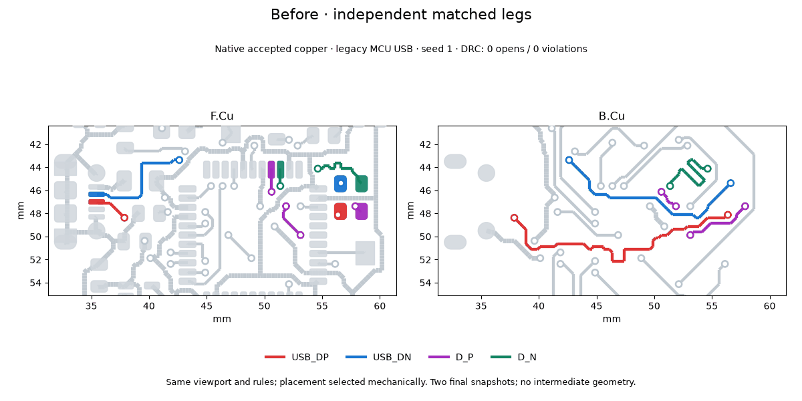

Coupled USB routing and matching recovery¶
Differential pairs route as units before the independent maze. The regression
runner enables --pair-access by default; --no-pair-access (campaign
pair_access = false) retains the control behavior. A pair that cannot couple
counts as unresolved for placement selection. Saved copper must pass the coupling
and endpoint-path audit as well as native KiCad DRC.
The router tries shared surface channels, then jointly selects legal through-via
sites and a coupled trunk on a permitted layer. Endpoint via orientations are
independent choices with polarity preserved. Matching measures the entire route,
including access tracks and barrels; timing contracts use each layer’s delay.
Copper, hole spacing, pad keepaways and layer restrictions remain constraints.
Search is bounded by PNR_PAIR_ACCESS_SECONDS (30 seconds per pair). Failure
reports distinguish unsupported topology, electrical limits, geometric rejection
and search timeout; a failed search does not prove unavoidable congestion.
Reorderable series lines can turn and reverse together, keeping pad-facing and
line order consistent. --line-reorder, --tune-window-search and
--tune-sequential remain opt-in. Free-space native matching edits preserve
foreign copper and require a cold DRC improvement.
Native before/after evidence¶

These are two accepted final states from campaign 20261007-ladder-7044e6,
09-mcu-usb-31-mc, seed 1, legacy fabrication. Both states use line reordering
and window search; paired access is the changed option. The viewport, layers and
colors are identical. No intermediate geometry is invented. Both saved boards
have zero native DRC opens and violations. The control connector pair has about
28 mm uncoupled copper per leg; the coupled result has 1.504 mm against the
unchanged 2 mm limit. Placement is selected mechanically in each arm.
Across both USB cases and seeds 0 and 1, the control is 4/4 native-clean with only 2/8 pair segments coupled; the coupled arm is 4/4 native-clean with all 8/8 segments coupled. Maximum uncoupled copper is 1.522 mm. The independent matching recovery campaign passed 2/4 baseline, 3/4 window search, 4/4 corrected line search and 4/4 sequential recovery.
A separate bare-default A/B on the rebased engine, campaign
20261007-ladder-294792, leaves line reordering and window search disabled.
The control passes 2/4 boards; the stricter default passes 0/4. Three default
boards have zero native opens/violations but fail the actual-copper coupling gate
(uncoupled MCU access or an unexpected branch). Header seed 0 also has an open
and a skew violation. Thus the default enforces coupling but does not yet recover
these placements without the optional placement/matching changes. The earlier
4/4 result must not be read as a bare-default result.
To reproduce the visualization from the accepted result directories, export
routed.kicad_pcb into geometry.json in each directory using the configured
headless KiCad Python, then render with the optional matplotlib/Pillow tools:
"$PNR_KICAD_PYTHON" tools/export_pair_geometry.py \
--board work/control/routed.kicad_pcb --out work/control/geometry.json
"$PNR_KICAD_PYTHON" tools/export_pair_geometry.py \
--board work/paired/routed.kicad_pcb --out work/paired/geometry.json
python tools/animate_pair_access.py \
--before-dir work/control --after-dir work/paired --out pair-access.gif
Each directory must also contain its accepted regression result.json; the
renderer refuses failed or non-clean results.
Scope¶
The initial joint-access implementation supports two terminals per polarity and endpoint through-via accesses. Branched pairs, ambiguous cycles, arcs and arbitrary mid-trunk transitions fail closed. This is a coupling and timing gate, not a full signal-integrity field solver or a general pair push/shove router. Validation beyond the two USB cases remains to be expanded.